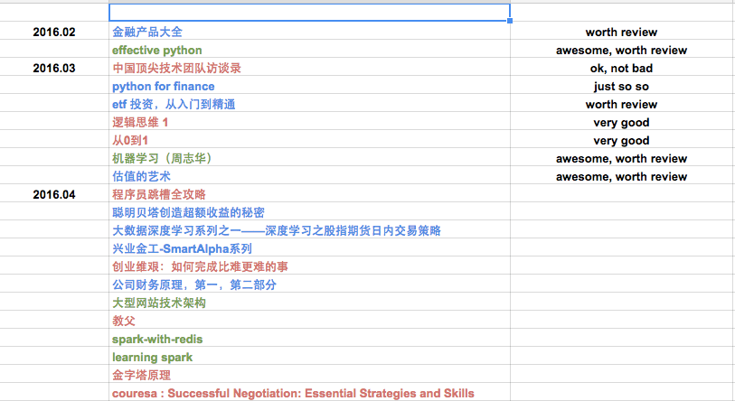

『 读书笔记 』3月读书总结和推荐
2016-03-26
写在前面
计划是每月读 5-10 本书，书籍类型大概是三个方面的：金融，技术，创业。之所以选择这三个方面，一方面是因为自己对这三个方面都很有兴趣，其次是被 linkedin 创始人 Hoffman 的 ABZ 理论 深度影响。建议大家都看看 abz 理论那篇文章，如果我有空，也会整理一些常用的这类理论模型到博客里的。
月底读书总结的形式都很简单，只是简单的一个列表和简单的书评，对觉得比较好的书会有单独的读书笔记。另外推荐大家用 excel 来做一些简单的工作管理，我现在就用 google docs 来做工作安排和读书计划，个人感觉比一些常用的神马协同软件强大太多了，简单，够用，就行了。工作中见过太多人把时间都花到使用那些协同软件上去，不得不说避重就轻了，适得其反，哈哈。
下面是一张我用 google docs 来做读书安排的截图，不同颜色代表不同类别的数据，清晰明了实用。

本月看了 7 本书，其中的电子书链接都放到亲爱的度娘云里了，个人觉得不错的书都是纸板的，不知道有没有电子版的，推荐好书都看纸版的。
ps: 我对好书的定义很简单：
- 给自己有所启发的
- 高质量的，专业的教程类书籍
- 后期会再度回首的书
- 看完后会打算赠送给盆友看的书
- 留着给儿子看的书 [好吧，目前我只有个宝贝侄儿，哈哈]
- 最后一条，印刷质量要好
1. 中国顶尖技术团队访谈录 - 电子版
这是 infoq 出的一系列电子书中的一本，总共有 4 季访谈录，都是对一些公司技术领导人的访谈，虽然访谈都讲得很粗，但是在遇到相关问题时也可以参考参考别人是怎么处理的，比如说当你要搭建一个大型 docker 集群时，可以参考参考第二季访谈录中这篇 腾讯罗韩梅 :万台规模的 Docker 应用实践 ，虽然说肯定不能解决你的所有问题，但是你肯定知道在腾讯有这样一个牛人有这个经验啊，去 linkedin 什么的找找这个人，邮件或者微信或者通过其他方式请教人家也行啊，是吧，哈哈。
总结：不要奢求能从这系列访谈里学到降龙十八掌，但是对于一个 tech leader 来说，看看这些书是应该的，书中自有颜如玉，书外自有黄金屋。btw，第三季和第四季做得没前两季好，页数都少了很多，估计是 infoq 不想做这个访谈了吧，anyway。
推荐指数：* * * *
2. python for finance - 电子版
通读下来，这本书更应该叫 python for finance - python tutoial and introduction to some basic financial theories，干货不多，大多数篇幅都去讲 python 了，也讲了一些基础的金融理论，比如说蒙特卡罗模拟，期权定价原理什么的。如果你会 python，会用 pandas，懂一些基础的金融知识，可以不看这本书了。读下来对这本书没有什么大的感触，就不发表太多看法了。
总结：如果你会 python，会用 pandas，懂一些基础的金融知识，可以不看这本书了；如果你不懂 python，不会 pandas，那也不推荐用这本书来学 python。
推荐指数：*
3. etf 投资，从入门到精通 - 电子版
之所以想看这本书，是一位大神觉得股票市场波动太大，去玩 etf 风险低，手续费也便宜，推荐我玩玩 etf。因为自己对 etf 一点不通，就买了这本书来看，上交所出版的，很专业，也讲得挺细致，对想玩，喜欢玩 etf 的人来说应该算是本好的手册。
总结：etf 基础书籍里比较好的，对 etf 感兴趣的人可以看看哦。
推荐指数：* * * *
4. 罗辑思维:有种、有趣、有料 - 纸版
罗辑思维出了几本书了，我看的是第一本，很有意思。不仅是观点上新颖独到，老罗还把网络上的一些评论也放到书里去了，甚至还放了一些负面的评论，对读者来说这样很不错。读这本书，能让人在看待问题，处理问题时的思路更开阔，更宽容一些，学会从更多方面，更多角度去挖掘一个问题的根本原因。这本书还有个比较让我喜欢的地方，每章都会有一些推荐的书，其中不乏好书。经常听到人说很想看书，但是不知道看什么书，对此我的回答的 “随便挑本书来看，看着看着就知道该看什么书了”。还准备看看之后的版本，虽然同事说后面的版本没有前面的有意思了，不过打算先去书店翻看翻看，如果后续的版本不是换汤不换药，仍然满足上面我对好书的定义，那我也会毫不犹豫的买纸版来看的。
总结：比较适合学生，职场人士读的书，尝试学会从更多的方面去待人待物。
推荐指数：* * * * *
5. 从0到1 - 电子版
这本书曾经很火，还记得当时公司群里时常都在讨论。虽然我看的是电子版的，不过我也觉得这本书值得买纸版的，如果能容忍那外强中干的印刷质量的话。这本书单独有总结帖的：
总结：很适合工作 3 年以上的人看，特别是想创业，创业中的，在创业公司上班的人，以创业心态工作的人看。或者再宽泛一点，适合想把事情做好的人看。
推荐指数：* * * *
6. 机器学习（周志华）- 纸版
啊哈，这本书怎么说呢？之所以买他全是因为同事朋友圈里的一篇转发，说这个似乎是泰斗级的教授写了一本机器学习的书，当时也看了下这个教授的介绍 [ 哈哈，对天朝的老师们没什么好感。按照我的理解，所谓 师者，传道，授业，解惑也，不知道天朝有几个老师敢读了韩愈的这段话还敢自称师者的 ]，觉得还行，amazon 上的书评也还可以，就剁手买了下来。
读下来，只能说还可以吧，just so so，但是这本书有种很浓烈的味道 －－ 书生味。也许是工作的原因，对这类有太多书生味的书没太大感觉。还是更喜欢实在一些的书，比如 Mitchell 的 《Machine Learning》, 图灵出版的《Machine Learning in Action》，或者细分下来的《推荐系统实战》这类书。
总结：书生味太浓，内容倒是也不差。
推荐指数：* * *
7. 估值的艺术:110个解读案例 - 纸版
和这本书的第一次相遇是在陆家嘴正大广场的书店里看到的，当时我很想找一本公司基本面的书来看看，准备在自己的投资模型里多加一些公司基本面的因子。当时第一次看到这本书，翻看了十来分钟，知道这就是我想要的，简单，够用，还有翔实的例子，比《公司财务原理》这类书要来得痛快干脆，btw，我并不是说《公司财务原理》这本书不好，我也在看这本书的，只是《估值的艺术》这本书更适合当时的需求。而且，从小的方面来说，这本书能教你一些公司基本面的东西，对投资有所帮助；从大到方面来说，这本书教你怎么挖掘一个潜力公司，或者教你怎么管理自己的公司，或者说教你当你有了自己的公司的时候，应该从哪些方面实时查看自己公司的发展情况。很有价值。
总结：如果你做股票投资，这本书值得一看；如果你有自己的公司，或者以后想要有自己的公司，那这本书更值得反复品读。
推荐指数：* * * * *
8. Master Apache Spark
这本书是一个国外咨询师写的开源书籍，居然还有一本纸质版的 Master Apache Spark，不过和这本开源书籍应该没什么关系。之所以想先看这本书是因为 spark 更新得很快，作者应该会及时更新相关内容到最新的 spark 版本。看下来感觉还行，都是作者根据相关文档，相关书籍，以及自己的理解和实践来写的。但是里面还是有一些问题，也有的地方没有写。不推荐作为第一本学习spark的书籍，可以在有一定经验后翻翻看。下月还是准备看 Matei 合写的 Learning Spark，虽然出版时间很早，但是毕竟是 spark 的作者参与的，内容应该更清晰，深入，等待下个月我的读书笔记吧。
总结：内容还行，作者更新也挺频繁的，但是不推荐作为第一本学习 spark 的书，有一定经验后可以看看。
推荐指数：* * * *